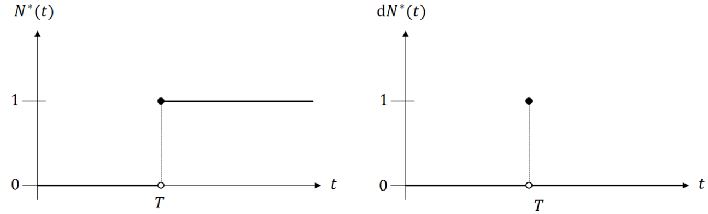

Chapter 2 - Mathematical Foundations
Department of Biostatistics & Medical Informatics
University of Wisconsin-Madison
\(N^*(t)=I(T\leq t)\): number of event (0 or 1) by \(t\) (cumulative)
\(\d N^*(t)=N^*(t) - N^*(t-) = I (T=t)\): number of event at \(t\) (incident)  \[E\{N^*(t)\} = F(t),\,\,\, E\{\d N^*(t)\} = \d F(t)\] \[E\{\d N^*(t)\mid N^*(t -) = 0\} = E\{\d N^*(t)\mid T\geq t\}=\d\Lambda(t)\]
time variable) \((a\wedge b = \min(a, b))\)status variable)\[C\indep T\]
Likelihood on a single subject \[p(X, \delta)\propto f(X)^\delta S(X)^{1-\delta}=\lambda(X)^\delta S(X)\]
Log-likelihood on a random \(n\)-sample
Transformation of \(T\) by some \(h(\cdot)\)
Compact notation \[\delta I(X\leq t) h(X) = \int_0^t h(u)\dd N(u)\]
Interpretation \[\underbrace{\dd M(t)}_{\mbox{residual}} =\underbrace{\dd N(t)}_{\mbox{observed response}} - \underbrace{I(X\geq t)\dd\Lambda(t)}_{\mbox{systematic part}}\]
Conditional mean & variance \[ E\{\dd M(t)\mid\mathcal H(t-)\}=0,\,\,\, E\{\dd M(t)^2\mid\mathcal H(t-)\}=I(X\geq t)\dd\Lambda(t) \]
Uncorrelated increments (UCI) (for \(t<s\)) \[ E\{\dd M(t)\dd M(s)\}=E\left[\dd M(t)E\{\dd M(s)\mid\mathcal H(s-)\}\right] =0 \]
Mean and variance of martingale integral
\[E\left\{\int_0^t h(u)\dd M(u)\right\}=\int_0^t h(u)E\left\{\dd M(u)\right\}=0\]
\[ \begin{align} E\left\{\int_0^t h(u)\dd M(u)\right\}^2 \stackrel{\mbox{UCI}}{=}\int_0^t h(u)^2E\left\{\dd M(u)^2\right\} =\int_0^t h(u)^2\pr(X\geq u)\dd\Lambda(u) \end{align} \]
time), \(𝛿=𝐼(𝑇≤𝐶)\) (status)Martingale integral (e.g., score function) \[ \int_0^t h(u)\dd M(u)=\int_0^t h(u)\left\{\dd N(u)-I(X\geq u)\dd\Lambda(u)\right\} \]